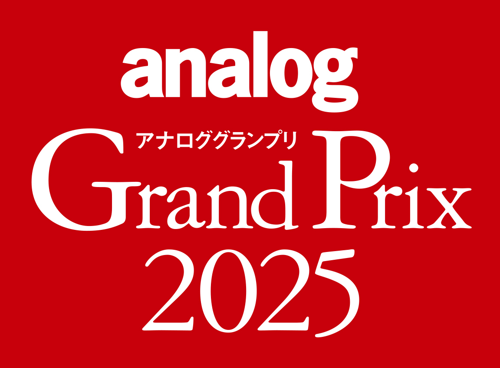

ANALOG GRAND PRIX 2025
ABOUT
アナロググランプリは、アナログオーディオ製品の中から最も優れた製品を選出するアワードです。各メーカーおよび輸入商社からエントリーされたモデルから、今年も「アナログ感覚が感じられ、本誌読者に推薦するにふさわしいアナログ再生に欠かせない機器」を投票により選出いたしました。4名のオーディオ評論家と全国の投票販売店による厳正な投票・審査を経て、各カテゴリーの頂点に立つ製品が選ばれます。
AWARD WINNERS
Technics
¥550,000
ツインロータ同軸ダイレクトドライブモーターとΔΣ-Drive技術を搭載した次世代フルオートプレーヤー
Thorens
¥308,000 / ¥385,000
名機TD160の系譜を受け継ぐベルトドライブ・ターンテーブル
DS Audio
¥1,320,000
専用トーンアーム付属の光カートリッジシステム。革新的な光学式読み取り方式
Ortofon
SPUシリーズの最高峰モデル。楕円針搭載のMCカートリッジ
Audio-Technica
ダイレクトパワー方式MCカートリッジの進化形。究極の情報量と空間表現
MY SONIC
ダイヤモンドカンチレバー搭載のハイエンドMCカートリッジ
Luxman
フルバランス構成のフォノイコライザーアンプ。MC/MM両対応
Esoteric
セパレート筐体の超弩級フォノイコライザー。光カートリッジにも対応
Triode
KT150真空管搭載の大出力管球式プリメインアンプ
Phasemation
300B真空管シングル構成のプリメインアンプ。洗練された音楽性
Denon
伝説のDP-3000の系譜を継ぐダイレクトドライブターンテーブル
Ortofon
新世代のMCカートリッジ。高い解像度と豊かな音楽性を両立
Luxman
クラフトマンシップ溢れるフォノイコライザー
Triode
300B真空管を採用した高品位プリメインアンプ
Audio-Technica
¥99,000
ダイレクトドライブ方式のコストパフォーマンスに優れたターンテーブル
CHUDEN
高品位な再生を実現するコストパフォーマンス抜群のMMカートリッジ
Triode
EL34真空管搭載のエントリークラス管球式アンプ。豊かな音楽表現
DS Audio
光カートリッジ技術の革新的発展。独自の光学式読み取りの新たな到達点
Audio-Technica
高精度アルミニウム削り出しヘッドシェル
Acoustic Revive
天然水晶を使用したレコードスタビライザー
CATEGORIES
ターンテーブル
アナログプレーヤー
カートリッジ
MC / VM / MM型
トーンアーム
トーンアーム
フォノイコライザー
フォノアンプ / 昇圧トランス
管球式アンプ
真空管式アンプ
アクセサリー
ケーブル / インシュレーター等
JURY
審査委員長
HISTORY
analog 22号 アナロググランプリ2009
「analog」誌がキーワードとする"アナログ感覚"が感じられ、本誌の読者に推薦するにふさわしいアナログ再生に欠かせないオーディオ機器」を選定することを目的に、第1回アナロググランプリが開催される。選定対象ジャンルは、デジタル機器を除いた現行オーディオ機器。
analog 34号 アナロググランプリ2012
スピーカーシステムを選考の対象外とし、アクセサリー部門を新設。アナログ再生環境の周辺機器にも光を当てる体制が整う。
analog 38号 アナロググランプリ2013
アナログオーディオに造詣の深いオーディオ専門店が、投票というかたちで参加。アンプについては、真空管アンプとフォノ入力に対応したソリッドステートアンプを選定対象とする。
analog 59号 アナロググランプリ2018
これまでの年末号から、春号での開催となった。「音楽ファンの皆様にとっての宝物のような存在となり得る製品」と「最先端のテクノロジーで従来では体験できなかったような、アナログ再生の新たな価値を切り拓く製品」の２点を新たに選定基準に追加。これに伴い、選定対象ジャンルにスピーカーシステムを戻し、アナログアクセサリーを対象外とした。
analog 67号 アナロググランプリ2020
これまでの選定基準に加え、高級機偏重になるのを避けるべく、現実的な価格も従来以上に考慮しての選定とする。角田郁雄氏が審査委員長に就任。スピーカーシステムを選定対象ジャンルから除外。
analog 75号 アナロググランプリ2022
アナログ機器には息の長いロングランモデルが多いことから、この回のみロングラン賞を設置。長期に渡ってアナログ再生を支えてきた6モデルが選出された。
analog 83号 アナロググランプリ2024
新たに「ベスト・コストパフォーマンス賞」を設け、リーズナブルな価格の優秀モデルを選出することとした。
analog 87号 アナロググランプリ2026
アナログ周辺アクセサリーの優秀モデルを選出するため新たに、「アナログアクセサリー賞」を設けた。